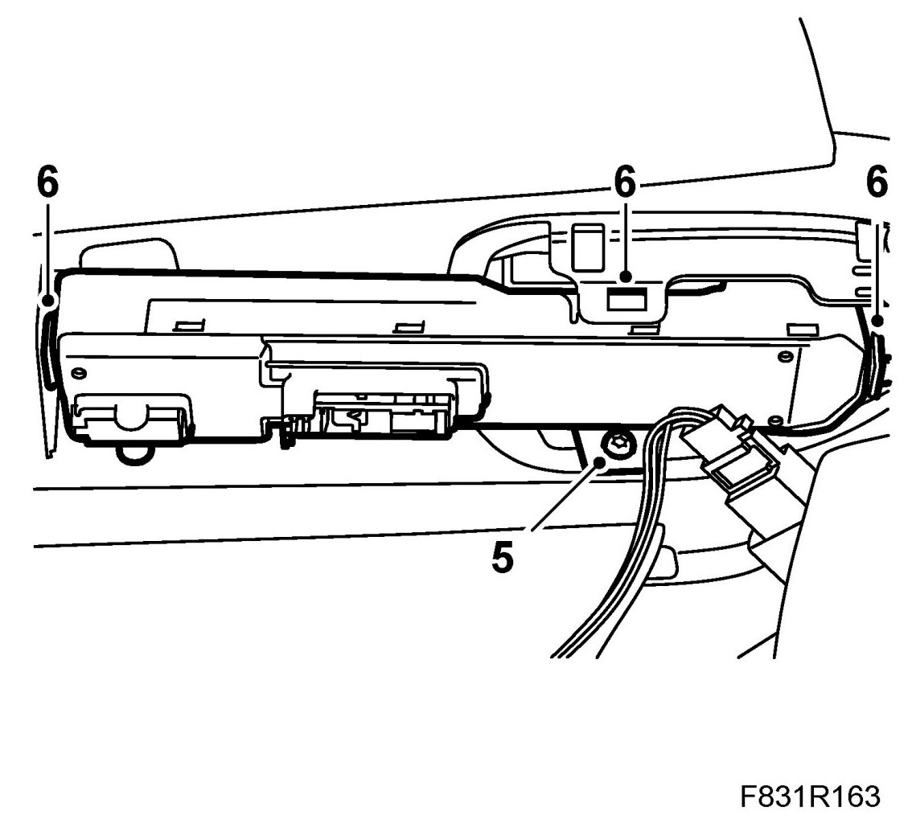
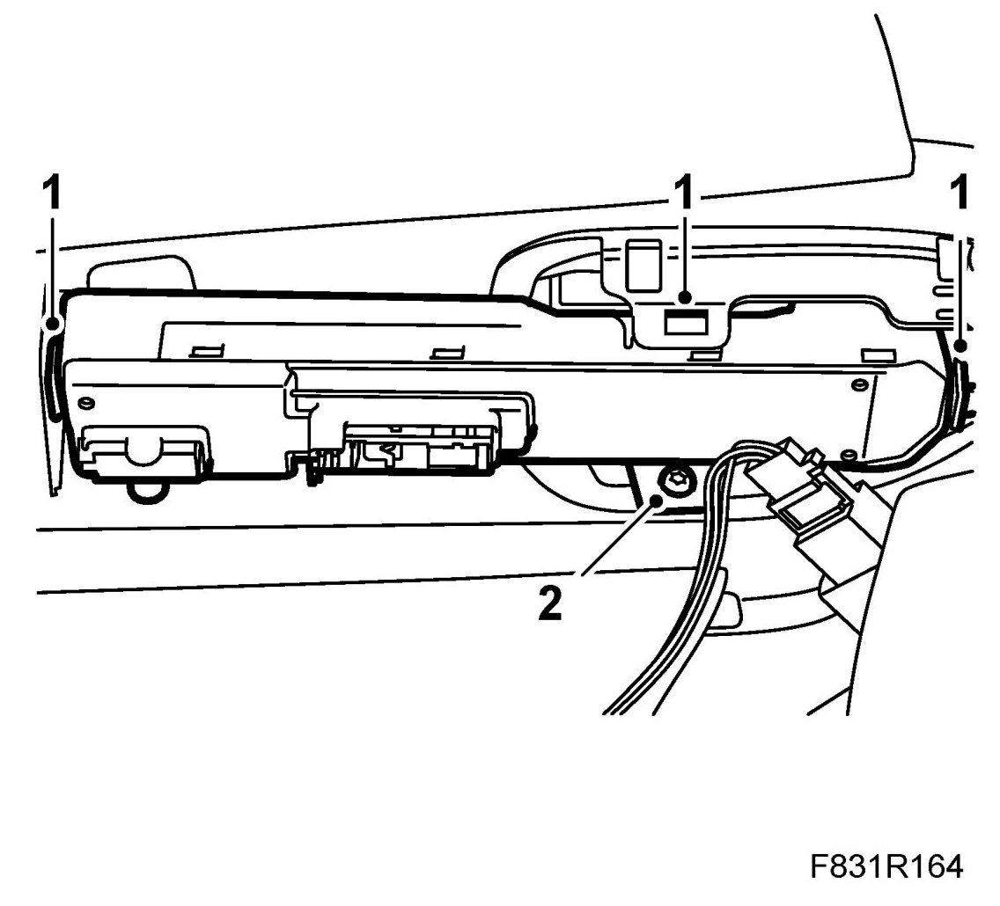

Door Control Module, CV (702D/P)
Door Control Module, CV (702D/P)
Only applies to SE, GB and DE markets: Before replacing a control module the normal fault diagnosis in accordance with WIS must be carried out, and the Checklist for replacement of control module, DZM must have been worked through.
To remove
1. Perform the procedure for Before removing a control module
2. Remove Door trim, CV.
3. Lay the side of the door on a clean, soft surface.
4. Unplug the connector for the luggage compartment switch.
5. When replacing the driver's door module: Remove the door trim bolt.

6. Remove the control module with a screwdriver. First, remove the rear clip followed by the internal and external door module clips. Carefully pull the control module downwards and to the rear.
To fit
1. Fit the control module at an upward angle so the clips engage.

2. When replacing the passenger door module: Remove the door trim bolt.
3. Plug in the connector for the boot lid switch.
4. Fit the door trim.
5. Cars with pinch protection: Perform Programming of the pinch protection.
6. Perform the procedure for After fitting a control module.